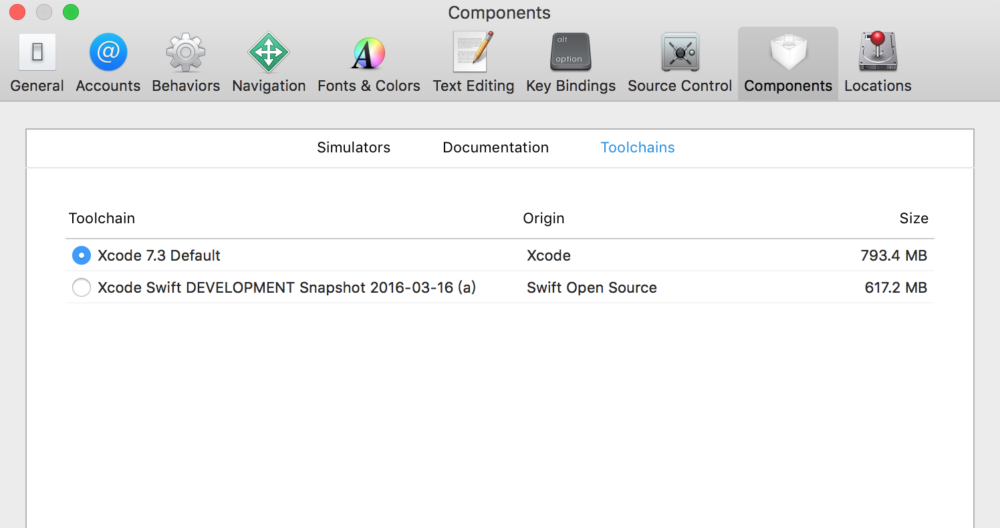

Swift学习笔记(六)——下一代Swift
前言
从 Swift 学习笔记第一篇到现在，Swift 本身已经从 1.0 发展到 2.2，秋季即将发布 3.0，Swift 本身也已经在 Github 上开源了。在这段期间，Swift 语言本身发生了非常大的变化。从 1.0 到 1.1，1.2，以及到 2.0 大版本，每次 Swift 的升级几乎都会带来破坏性的改变。即将发布的 Swift 3 据说是最后一个包含大量 breaking change 的版本了。因此本着不想再被坑的心态，笔者打算放弃当前的 2.2 版本，直接开始学习尚在开发中的 Swift 3.0 版本了...
安装开发版的 Swift
目前随 Xcode 7.3 附带的是 Swift 2.2，要安装 Swift 3.0 版本，需要从 Swift 官网 下载开发版 snapshot。下载完安装之后，在 Xcode 的 Preference 里可以找到切换 Swift 版本的地方：

选择切换之后需要重启 Xcode。
使用开发版 Swift 需要注意的地方有两点：
- 不支持 Playground
- 不能用于发布到 App Store
语法变化
从 2.0 系列到 3.0 版本，Swift 当中最大的变化就是在 API 命名上了，也是造成破坏性的最大源头。几乎所有的 Cocoa API 都经过重命名，以符合 Swift 的命名规范。来自 swift-evolution 的例子如下：
旧 API
let content = listItemView.text.stringByTrimmingCharactersInSet(
NSCharacterSet.whitespaceAndNewlineCharacterSet())
新 API
let content = listItemView.text.trimming(.whitespaceAndNewlines)
可以看到主要是去除了 Objective-C API 中常见的冗余名称。下面是几个我在重构已有代码时碰到的例子：
| 旧 API | 新 API |
|---|---|
UIScreen.mainScreen() |
UIScreen.main() |
UIColor.whiteColor() |
UIColor.white() |
rangeOfString(string) |
range(of:string) |
componentsSeparatedByString(string) |
componentsSeparated(by:string) |
advancedBy(i) |
advanced(by: i) |
setValuesForKeysWithDictionary(dict) |
setValuesForKeysWith(dict) |
可以看到原有的名称不同，改名使用的规则也不尽相同。具体的规则在 swift-evolution 对应的 proposal 中有详尽说明。
对于 Cocoa 自己的 API 来说，由于本身 API 命名就比较规范，可以很好地通过重命名导入 Swift。对于开发者自己撰写的代码来说，很可能重命名得到的结果并不好。目前因为 Swift 3 尚在开发中，对应的 migrator 也没办法看到（猜测应该还没有完成）。根据之前的 migrator 的坑爹表现来看，也不能对 Swift 3 的 migrator 报太大期望。因此想继续使用旧有 Objective-C 代码，更好的办法可能仍然是使用 NS_SWIFT_NAME：
+ (id)recordWithQuality:(double)quality NS_SWIFT_NAME(record(quality:));
包管理
Swift Package Manager 作为 Swift 3 的一部分，也可以在 Swift 3 当中使用了。作为第一个官方推出的依赖管理工具，想想还是挺让人兴奋的，只不过这货目前还处于半残的状态。
首先想在命令行里使用 Swift 的开发版，需要设置环境变量：
export TOOLCHAINS=swift
然后测试一下：
$ swift build --version
这时候我碰到了报错：
dyld: Library not loaded: @rpath/libswiftCore.dylib
Referenced from: /Library/Developer/Toolchains/swift-DEVELOPMENT-SNAPSHOT-2016-03-16-a.xctoolchain/usr/bin/swift-build
Reason: image not found
找了一圈才在 这里 找到解决方案，需要同时设置 PATH 和 DYLD_LIBRARY_PATH 搜索路径：
export PATH=/Library/Developer/Toolchains/swift-latest.xctoolchain/usr/bin:$PATH
export DYLD_LIBRARY_PATH=/Library/Developer/Toolchains/swift-latest.xctoolchain/usr/lib/swift/macosx:$DYLD_LIBRARY_PATH
然后再执行 swift build --version 终于看到了想要的结果：
Apple Swift Package Manager 0.1
所以...你应该也了解到现在这货的状态了。目前还是乖乖地用 CocoaPods 吧。
跨平台 & 服务器端
Swift 开源之后，已经出现了诸如 Linux，FreeBSD，以及 Windows 等平台的 Port，进行服务器端的 Swift 开发也成为了可能，相对完善的Web 开发框架有 Perfect 和 Kitura 等。
不过现在为止，Swift 的基本库在 OS X 以外的平台基本还处于半残废的状态，只有随编译器自带的 Core 这部分库是可以用的。其余的诸如 NSURL 等 Foundation 的内容，苹果打算在 swift-corelibs-foundation 里面实现。之所以说“打算”是这部分目前还没有实现，上面提到了 Swift 3.0 的 API 变化。这个 corelibs 苹果也打算直接用 3.0 的标准来写了，因此现在它本身也是半残状态。社区当中有 SwiftFoundation 这样的开源实现，目测完成度也不是很高。